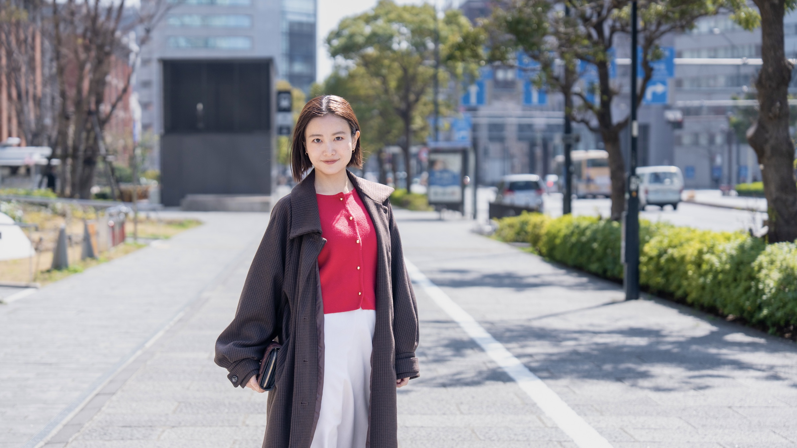
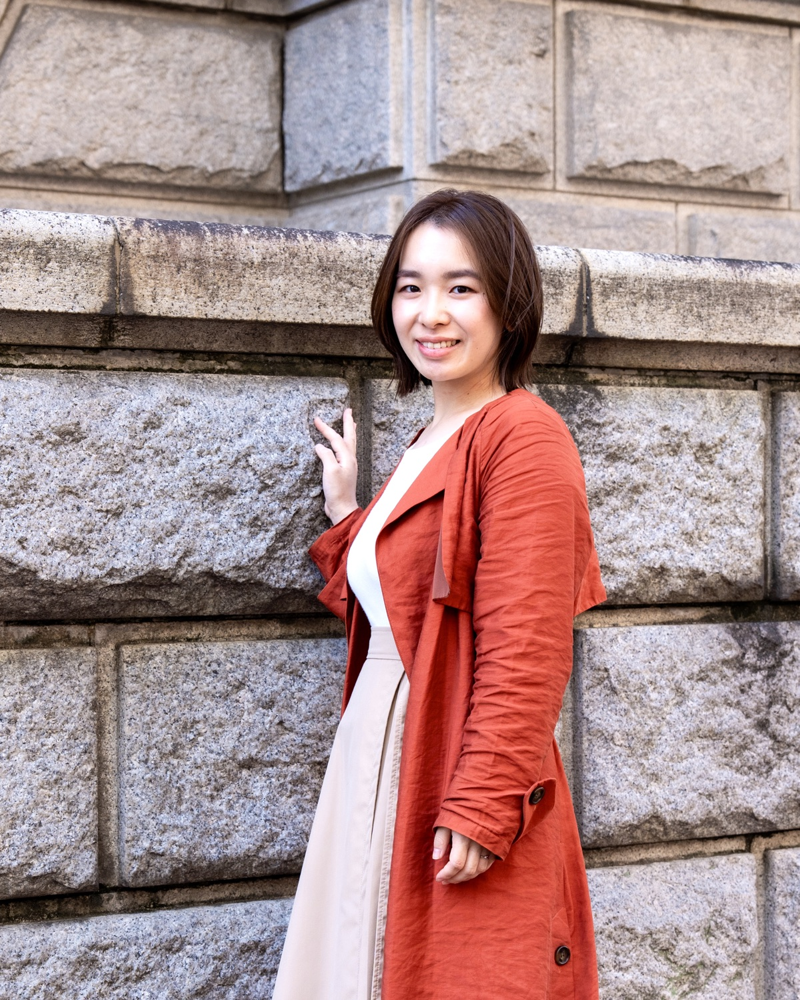
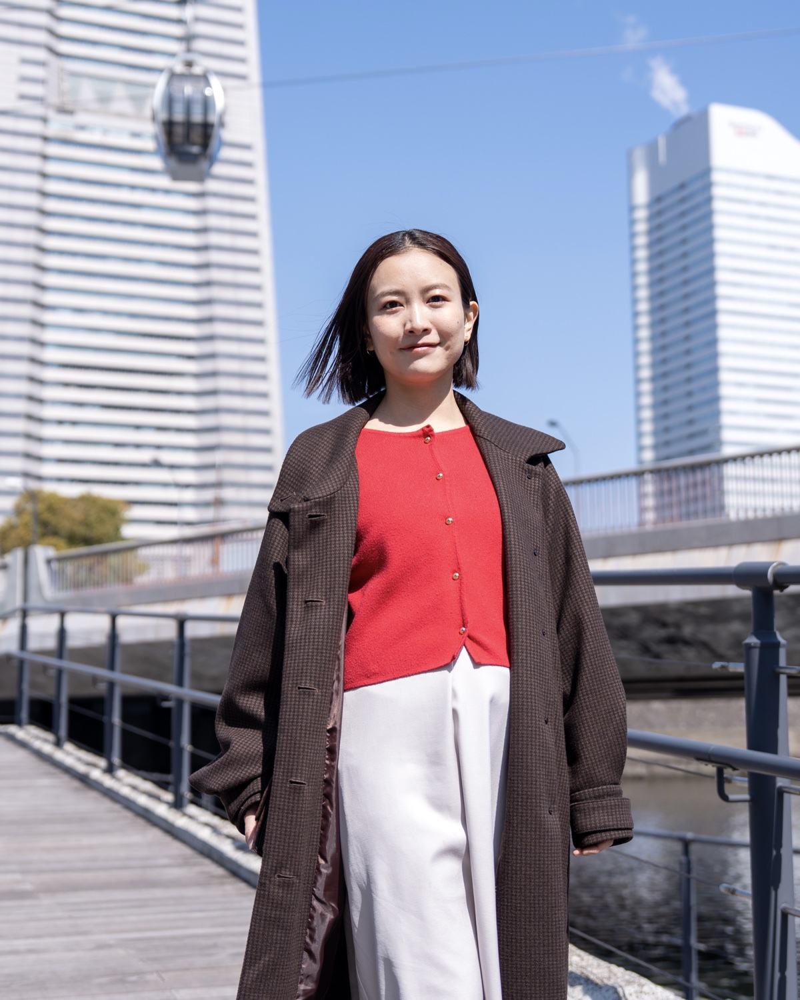
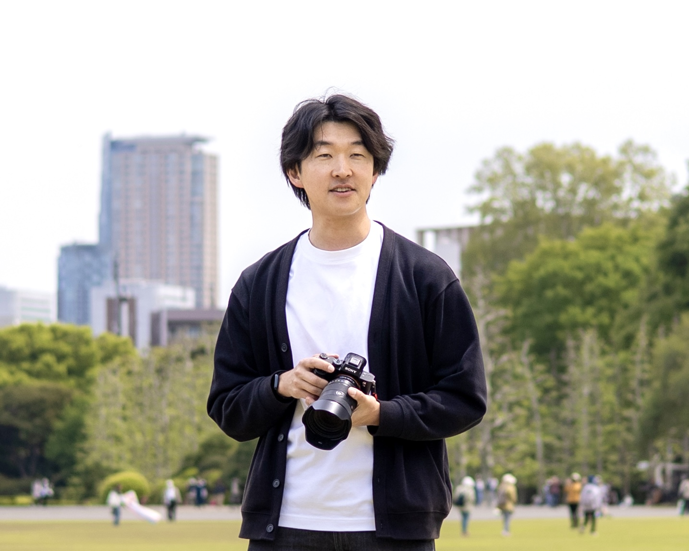

Location
¥25,000税込
- 屋外での自然光撮影
- 撮影時間：約1時間
- 納品枚数：30枚〜
- レタッチ込み
- おすすめ：SNS用、ナチュラル志向

Profile photography
プロフィール / SNS用 / 宣材写真。
横浜を中心に、上品さと親しみやすさが伝わる一枚を撮影します。
雰囲気や用途に合わせて、
自然体の表情を残します。



写真に写ることが得意ではない方でも、安心できる撮影を心がけています。 ポーズや表情を無理につくるのではなく、その人らしい自然な雰囲気を大切にしながら撮影を進めていきます。
起業、転職、SNS、ホームページ、オーディション、講師活動など、写真が必要になる理由は人それぞれです。 「どんな印象を伝えたいか」を一緒に考えながら、あなたらしさが伝わる写真を撮影します。
用途に合わせて選べる、
シンプルな撮影プランです。
¥25,000税込
¥30,000税込
¥50,000税込
はい。用途や見せたい雰囲気に合わせて、屋外やスタジオなど一緒に考えられます。
SNSや自然な雰囲気を大切にしたい方は屋外、宣材写真やビジネス用など整った印象を出したい方はスタジオがおすすめです。
屋外撮影の場合は、天候を見ながら日程変更やスタジオ撮影への切り替えを相談できます。